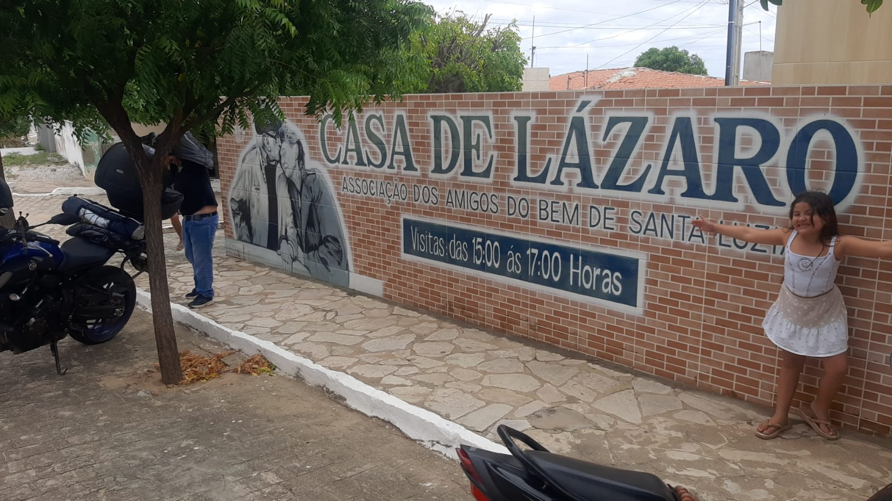
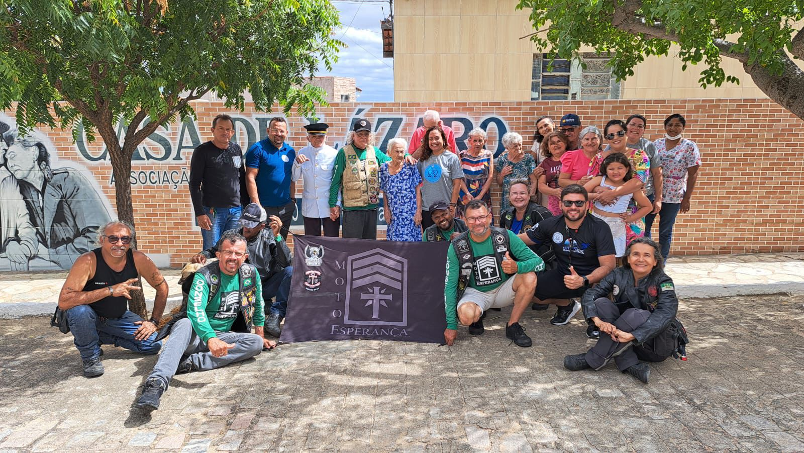
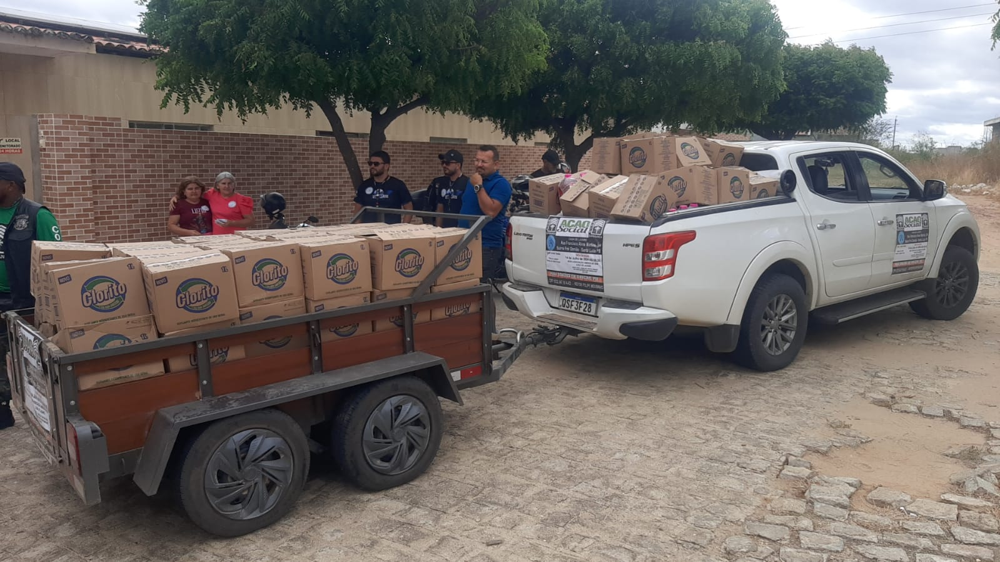
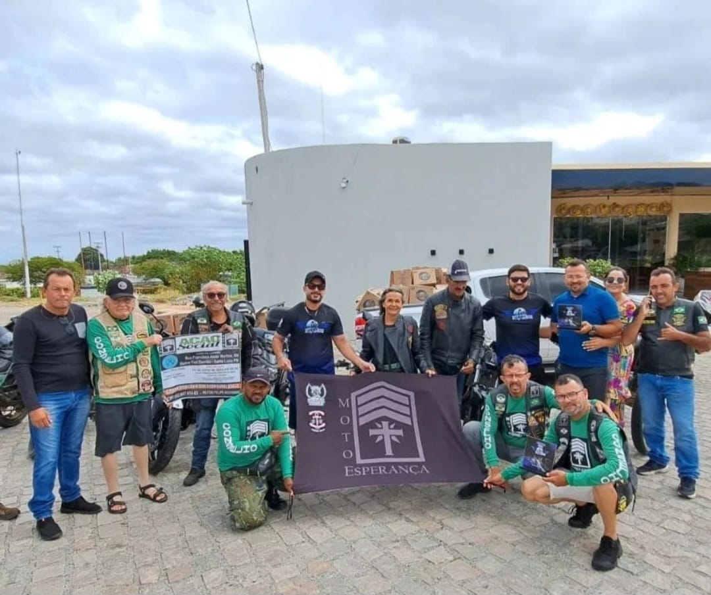
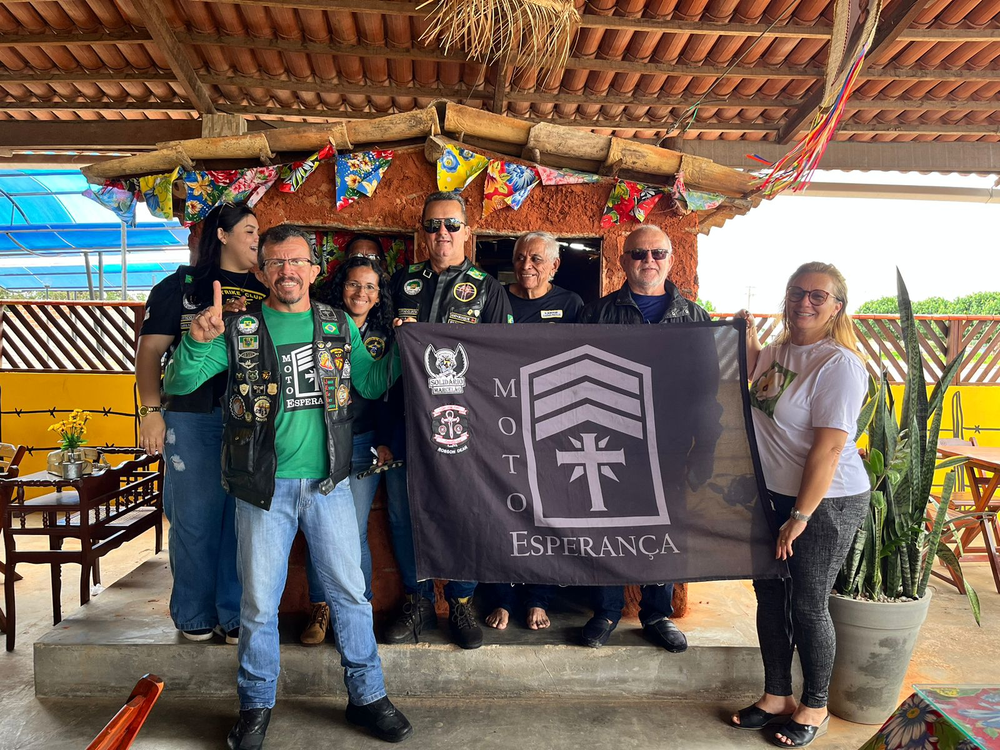
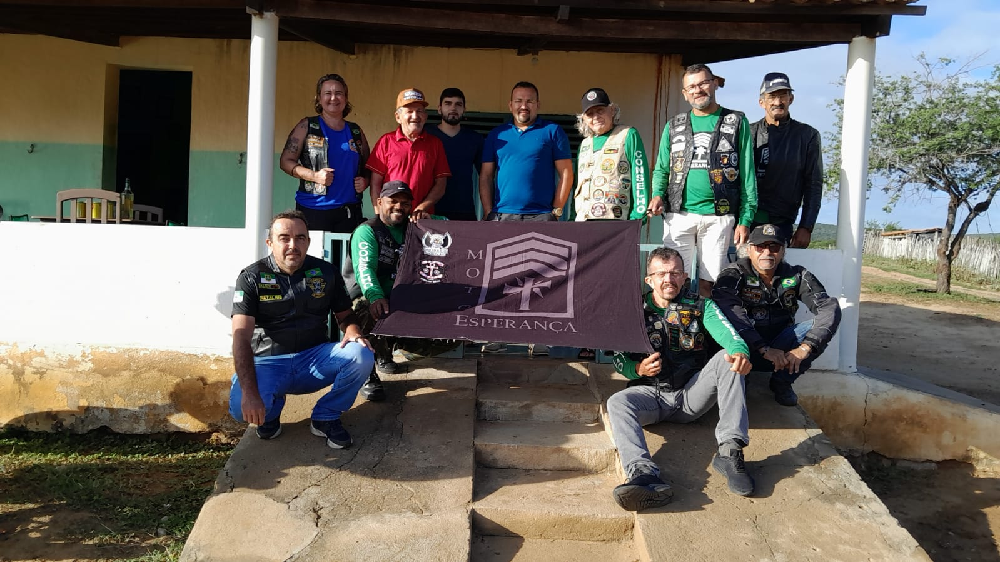
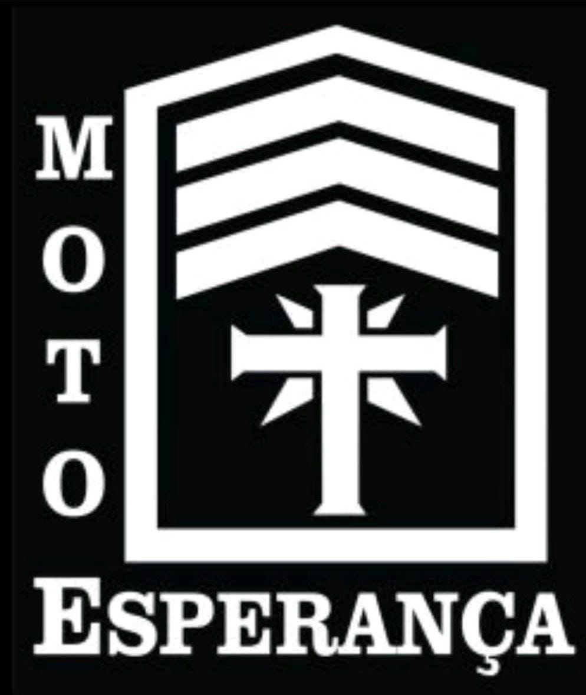

O Moto Esperança nasceu no Coração do nosso querido Robson Dean, que compartilhou o seu sonho com todos os outros Motociclistas que abraçaram esse desejo em comum de ajudar os mais nessecitados.